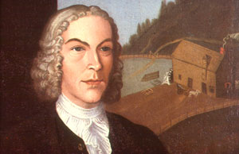
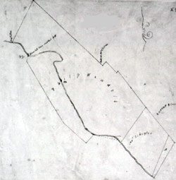

Wendell's Mills were located along the Beaverkill and were a well-known early Albany landmark for more than a hundred years. The site included a grist mill and later several factory buildings. They were part of larger family real property holdings that probably extended south from the family homes on upper State Street until they bordered the Schuyler holdings south of the Beaverkill. During the seventeenth century, at least two mills reputedly were built along the Beaverkill. But their exact location is unclear. In 1729, attorney Evert Wendell petitioned the city council for: "three or four acres of ground for to build the mill on, lying on the north side of the aforesaid Beaver Kill, it being part of the land which Evert Wendell late of this city had in his life cleared, and also the kill and the use of the water, and also free liberty to make a dam so far distant from the mill up the said kill or creek till he shall have fall enough for his said mill, together with so much ground to lye a gutter from the said dam to the said mill and also liberty to make a wagon path from the mill to the city . . . [it] will be the first grist mill that ever was built within the limits of this city altho' the water has runned there for no us ever since the settlement of this city" Although the city council deferred action on that petition claiming the creek and property requested belonged to the Albany Dutch Reformed Church, apparently Wendell did build several processing plants in association with "his" Beaver Creek property. His will dated 1749 referred to a saw mill, gristmill, and brew house. Wendell instructed his sons to build a chocolate factory perhaps on that property as well. Prior to that time, son Abraham E. Wendell had been so involved with the site that his portrait was painted in 1737 with his mill in the background. Powered by water from the Beaverkill, the Wendells ran those mills almost to the end of the century. By the time of the American Revolution, a wagon road did connect Wendell's Mills to the city of Albany. The Albany maps drawn during the 1790s by State surveyor Simeon De Witt make "Wendell's Mills" a prominent south Albany feature. However, by that time, the mill-related activities of the aging Wendell brothers are less than prominent in the historical record. By 1800, a traveller described the Beaverkill ravine and noted that Wendell's mills had been abandoned. In 1802, a map was made of Philip Wendell's Beaverkill property. Shortly thereafter, Wendell and his wife sold forty acres of what he described as "pasture" to developers Abraham G. Wendell and David Waters. In 1900, the area was known as Beaver Park and was opened as Albany's first public playground. Ambitious subsequent plans called for athletic fields, a track, natural areas, baths, walkways, and a pool. Today, the mill site sits beneath the basin of Lincoln Park - perhaps nearby the Lincoln Park pool. The Beaverkill, which provided the water to power the mill, has largely been piped and is beneath the park as it still flows downhill, down Arch Street, across South Pearl, South Broadway, and into the Hudson. Sources: This exposition has been formed from community-based information and a close reading of city maps. It also benefits from research conducted by historian Tricia Barbagallo for a school-based program entitled "Life Along the Beaverkill: A History Walk through Lincoln Park," which she presented in conjunction with the Thomas O'Brien Academy of Science and Technology (TOAST) during 1995. Materials from it are on file at the project office. Quoted from the Albany Common Council minutes for January 6, 1729 as printed in the Annals of Albany 6:40-41. Map showing Philip Wendell's Beaverkill property in 1802. Adapted from the City Engineer's map collection #328, microfilm from the Albany County Hall of Records. first posted 4/19/01; last updated 2/10/15
|